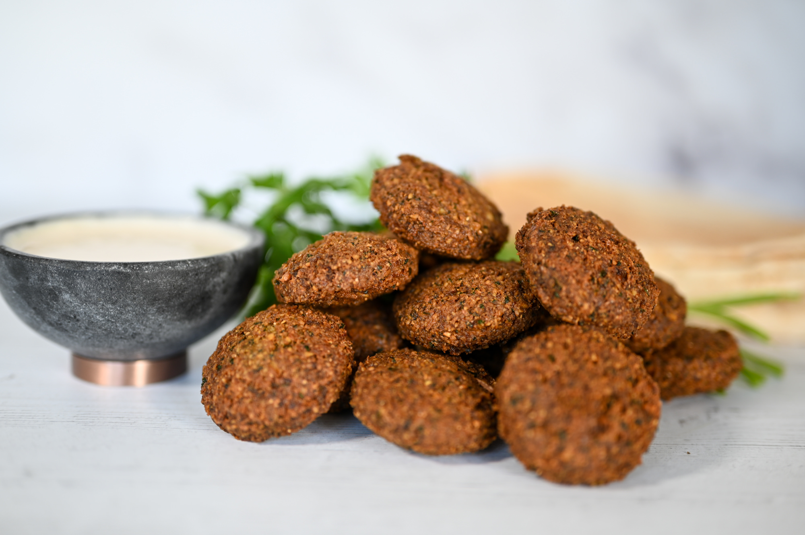

Enjoy our Delicacies!

Falafel
Golden, crispy falafel, bursting with aromatic spices and herbs, served alongside creamy hummus and tangy tahini sauce, creates a tantalizing Middle Eastern delight that dances on your taste buds with each flavorful bite.

Hummus
Creamy hummus, blended to perfection with garlic, lemon, and tahini, drizzled with extra virgin olive oil and sprinkled with zesty sumac, beckons with its smooth and velvety texture, inviting you to indulge in its irresistible allure.

Quinoa
Nutty quinoa, delicately seasoned and mixed with vibrant vegetables, offers a wholesome and satisfying dish that tantalizes your palate with its earthy flavors and hearty texture.
Contact Us